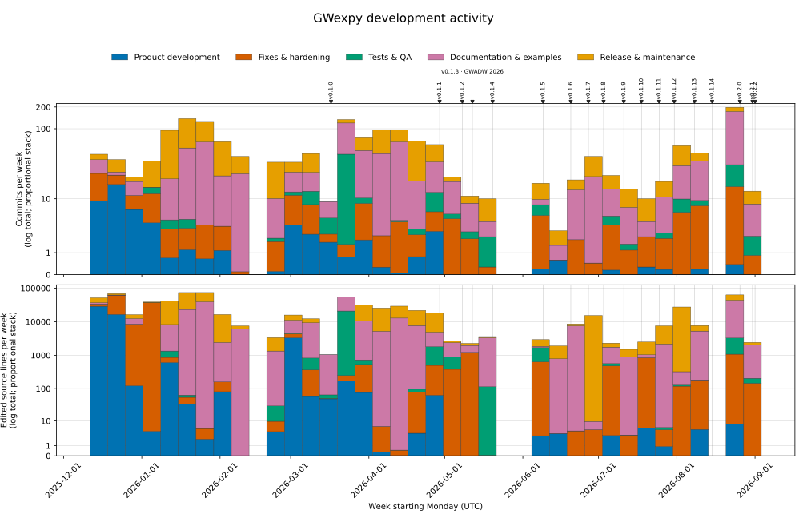

更新履歴#
週次開発活動#
{kind=link}

不変の v0.2.2 リリースタグまでの週次活動です。積み上げ棒はカテゴリ別にマージコミットを除くコミット数と編集されたソース行数を示し、リリースマーカーは到達可能な安定タグを示します。#
v0.2.2 リリースは GitHub Releases から取得でき、Zenodo DOI 10.5281/zenodo.22228340 でアーカイブされています。
[0.2.3] - 2026-09-05#
This maintenance-release candidate implements GWpy 4.0.1/4.0.2 compatibility
fixes across the audited GWpy-derived API surface. Historical automated
differential evidence is recorded for runtime candidate
d55717e9aed9ef5c22bb5d8ed0df95e19a313545, with review and evidence source
ff47d66ce985c295193a8d8cd1acef3ddd61add1. That runtime's human
scientific/data-model sign-off is approved: the release owner reapproved the
four unchanged parent-parity risks, signal methods, and signal-related internal
reconstruction authority for non-second irregular axes on 2026-09-04. The
approval is strictly limited to the six approved risk groups and excludes other
contracts. The historical approval remains bound only to candidate
c7b79db7fee2e646069679a0efe3d65c7ed4e562 and exactly five disclosed
parent-parity risks; see the
aggregate sign-off report.
This approval does not cover later source revisions.
The candidate adds no public API or dependency.
The current follow-up fixes scalar reduction allocation on NumPy 2 and updates CI provisioning and audit provenance. Each new source requires same-candidate scientific/data-model review, same-candidate release-security review, candidate-wide QA, and fresh 19-cell qualification. The release remains HOLD pending the final release gate. Any later runtime/data-model semantic change invalidates an aggregate sign-off and requires reapproval. Documentation-only recording commits do not alter the runtime candidate.
The current inventory evidence covers 575 logical members with 62 selectors and 396 executed cases per oracle. The historical c7 approval covered the same 575 logical members with 59 selectors and 384 executed cases per oracle; the generated inventory's 1,150 case rows are a separate logical version-row count.
Implemented with automated evidence#
Scalar statistics on NumPy 2: reductions of
Array3D,Array4D, andScalarFieldcan allocate their zero-dimensionalQuantityresult instead of failing under strictcopy=Falsesemantics. Values, units, and reduction axis rules are preserved.HDF5 collections: appending a
TimeSeriesDictno longer opens an unspecified target in truncating mode. Nativenames=,group=, append, duplicate-name, legacy-manifest, and link-safety outcomes now follow the installed GWpy oracle while private exact-time sidecars remain additive.Native HDF5 auto-identification:
TimeSeriesandTimeSeriesDictnow match GWpy for native.h5/.hdf5auto-read and auto-write. Structural NDScope detection retains precedence over the lower-priority generic HDF5 route; other ambiguous and GWexpy-only class families remain explicit.HDF5 window safety (#611): GWpy 4.0.x can return samples outside the requested interval for a completely non-intersecting HDF5 collection window because negative stop indices wrap. GWexpy now returns a zero-length series only for that fully disjoint entry after the parent reader succeeds. Mixed collections retain their keys and order, and only disjoint entries become empty. Partial overlap,
pad=, parent reader errors, and caller-owned source handling retain GWpy semantics. A safety-created empty retains the series class, dtype, unit, name/channel, and cadence; its publict0/spancollapse to the stored series start boundary. It does not inherit private exact-time authority from the source.Constructors and time axes (historically approved for c7): GWpy-supported
t0andepochinputs now take the parent route without exception-driven retries. Positional and keyword forms bind consistently, while the existing exactt0_nsauthority remains separate. Copy, slice, crop, append, and supported time-axis mutations preserve or invalidate private exact state according to the resulting cadence.Time and frequency conversion (historically approved for c7): scalar and date-component
to_gps()andtconvert()calls,from_gps()inputs, andFrequencySeries.ifft()timing metadata now match the active GWpy oracle. Invalid date-shaped values fail instead of falling back to vector interpretation.Spectral, signal, and statistics routes (historically approved for c7): default CSD, Rayleigh, heterodyne, demodulate, RMS, resampling, reductions, and axis-result types now follow GWpy values, units, shapes, metadata, and exception classes.
Plotting, CSV, and collections: plot methods accept the complete GWpy positional layouts and preserve Python-compatible duplicate-argument failures. Plain CSV uses the native GWpy route; existing enhanced-only arguments remain explicit opt-ins. Collection crop, prepend, and the historical
filterba()shim preserve their established call contracts.Specialized arrays and fields (historically approved for c7): inherited constructor binding, transposition, BifrequencyMap plotting, ScalarField finite differences, unit conversion, grid validation, and percentage comparisons now have explicit GWpy or fail-closed data-model contracts.
Compatibility notes#
non_intersecting_window_safetyis the sole approved default divergence from GWpy in this release. It prevents an upstream negative-index wrap from selecting data outside a completely disjoint requested HDF5 window. See the GWpy behavioral compatibility policy.The #611 safety exception is
approved-separately-unchanged; its independent human approval and release-note gates remain satisfied, and the current reapproval does not reapprove it. Its scope remains limited to the fully disjoint read-window subcase.The recorded human scientific/data-model approval is approved for runtime candidate
d55717e9aed9ef5c22bb5d8ed0df95e19a313545and strictly limited to the six approved parent-parity and signal risk groups below. It does not approve other contracts. The historical c7 approval of exactly five risks remains recorded separately:the mixed-unit CSD
V²/Hzlabel;public Rayleigh parent segment selection with a private corrected route and known finite-Monte-Carlo limitations;
stale Array2D/Plane2D
min/maxindices; andstale numeric
swapaxes/transposemetadata.
The current signal group covers dimensionless signal outputs, raw-magnitude frequency
Quantityhandling, float32 RMS underflow, and signal-related internal reconstruction authority for non-second irregular axes.The final two groups retain the previously disclosed stale axis metadata on specific Array2D/Plane2D reductions and numeric array permutations. Corrected or metadata-aware GWexpy-only routes remain explicit where already available.
[0.2.2] - 2026-09-01#
exact HDF5 epoch metadata を GWexpy の private state として保持しつつ、時系列選択の既定挙動を GWpy と互換に戻したメンテナンスリリースです。
修正#
TimeSeries crop 互換性：
TimeSeries.crop()は GWpy がサポートする引数を GWpy に委譲するようになり、通常および高 sample rate で、既定の sample 選択、t0、dt、成功または失敗の挙動が GWpy と一致します。Exact epoch の伝播：slice と crop は base operation を完了してから private exact state を伝播します。cadence を整数 nanosecond で表現できない場合は、GWpy では成功する operation を失敗させず、派生した exact authority を破棄します。
Lazy I/O registration：collection-first の time-series および frequency-series I/O は、scalar I/O と同じ idempotent registry bootstrap を実行します。反復 operation の後も reader と writer の identity および登録順を維持します。
[0.2.1] - 2026-08-31#
public API を変更せずに HDF5 exact-epoch の退行を修正し、lazy bootstrap I/O registration を復元したメンテナンスリリースです。
[0.2.0] - 2026-08-26#
このマイナーリリースでは、正確な時刻、相互運用可能な永続化、決定論的な来歴、および公開 GWpy 互換性のための v0.2.0 セマンティック契約ベースラインを確立しました。
追加#
time（正確な GPS 状態）：
TimeSeriesと関連するサポート対象操作は、キーワード専用引数として指定された GPS ナノ秒の起点を、コピー、スライス、pickle、MNE、および HDF5 サイドカーを通じて保持します。必要な場合、正確な状態は binary64 の時刻座標とは別に保持されます。HDF5 と来歴：ネイティブ HDF5 サイドカーは、GWpy で読めるコアペイロードを変更せずに、正確な epoch 状態、メタデータ、および構造化された来歴を保存します。来歴対応のパス名トランザクションは、上限付き助言ロックによりローカル POSIX プロセスを調整します。append 操作と呼び出し元が開いたコンテナは別個の dataset を保持し、パス名の置換は直列化され、最後に書き込んだ側を採用します。
GWF 読み取り：
TimeSeries、TimeSeriesDict、StateVector、およびStateVectorDictは、spawn 安全なparallel=読み取りをサポートします。nproc=は互換性エイリアスとして残ります。複数 worker の読み取りは単一のローカル frame path だけを受け付け、キャッシュ、URI/composite 表記、または未サポートの入れ子実行では I/O 前に失敗します。coupling：公開 v1 の coupling-segment schema、pandas/Astropy adapter、JSON エンベロープ、正準座標単位、および有限精度の格子に対する正確な検査を利用できます。
significanceは v1 schema の対象外です。スペクトル推定：
TimeSeries.psd()とTimeSeries.asd()はmethod="median-mean"を受け付けます。公開median_bias(n)は FINDCHIRP 互換の有限標本補正を提供します。PSD/ASD はサポート対象 backend 全体でname、channel、およびepochを GWexpy が保持することを保証します。一方、数値、unit、および周波数軸については backend が引き続き決定権を持ちます。
変更#
bootstrap と I/O：単純な
import gwexpyでは、コンストラクタや I/O が即時には登録されなくなりました。コンストラクタの登録にはgwexpy.register_all(include_io=False)を、コンストラクタと I/O の両方の登録にはgwexpy.register_all()を呼び出します。サポート対象の公開 I/O entry point はハンドラをオンデマンドで登録します。SeriesMatrix B0：480 セル Phase A のコンテナ契約を固定しました。
SpectrogramMatrixと次元を持つ生のndarrayの加算および減算は、TypeErrorによりアトミックに失敗します。より広範な B1 合成ランタイムは、明示的な人間による D21/data-model sign-off を待って保留のままです（adopted: false）。
削除（破壊的変更）#
廃止された開発者向けプロキシ import である
gwexpy.utils.shell、gwexpy.utils.sphinx、gwexpy.utils.sphinx.ex2rst、およびgwexpy.utils.sphinx.zenodoを削除しました。シェルヘルパーにはsubprocessとshutil.whichを使用し、保守されているドキュメントツールは直接使用してください。Zenodo には保守されている client またはプロジェクトの release tooling を用途に応じて使用します。
互換性の修正#
GWpy 4 の実行時プロキシは、選別した公開 table、TimeSeries、LAL、およびその他の utility API を公開するようになりました。オプションの FrameL 互換性プロキシは遅延読み込みです。
python-framelなしでも import でき、FrameL が提供する symbol が要求されたときだけ元の dependency error を報告します。
更新履歴#
flowchart LR
baseline["v0.1.14 ベースライン"] --> integration["v0.2 契約統合"]
integration --> median_mean["#686 median-mean スペクトル振り分け"]
median_mean --> source["v0.2.0 リリースソースのメタデータ"]
0.1.14 - 2026-08-15#
削除（破壊的変更）#
io (SDB): 文書化されていない
sqliteおよびsqlite3形式のエイリアスと.sqlite/.sqlite3GUI フォールバックが削除されました。代わりに、正規のformat="sdb"名と.sdb拡張子を使用してください (#635)。前に
後
format="sqlite"またはformat="sqlite3"は SDB リーダーを選択しました。format="sdb"を使用します。削除されたエイリアスによりIORegistryErrorが発生します。.sqlite/.sqlite3パスは、GUI フォールバックによって SDB にルーティングされました。アーカイブの名前を
.sdbに変更するか、ダイレクト I/O でformat="sdb"を選択します。サポートされていない GUI パスではRuntimeErrorが発生します。
動作が見えるバグ修正#
io (ATS.MTH5):
TimeSeries.read(..., format="ats.mth5")は、mth5>=0.6.8からサポートされているmth5.read_file(..., file_type="metronix")API を使用するようになりました。リーダーは生の ATSS サンプル値を保存し、Ex/Ey を mV/km に、Hx/Hy/Hz を nT にマッピングし、データ、開始時間、サンプル レート、コンポーネント、またはユニットのメタデータが欠落しているか矛盾している場合にフェールクローズします。公開されたパスは単一シリーズのみのままです。TimeSeriesDict.read(..., format="ats.mth5")は、オプションの互換性のない辞書ルートを入力する代わりに、依存関係を変更します。ソースのタイミングと単位には権限があるため、epoch=、timezone=、unit=、および不明なリーダーのオーバーライドは無視されるのではなく、明示的に失敗するようになりました (#619)。前に
後
リーダーが時代遅れのネストされた
mth5.io.metronix...read_atssAPI を呼び出し、シリーズを返す前に失敗する可能性がありました。リーダーは、サポートされているトップレベル API を呼び出し、返されたチャネル コントラクトを検証します。
TimeSeriesDict.read(..., format="ats.mth5")は単一チャネル実装にディスパッチできます。サポートされていない収集ルートはすぐに失敗し、呼び出し元を
TimeSeries.readに誘導します。リーダーのオーバーライドは受け入れられますが、無視されるため、ソースのタイミングと単位は予告なしに変更されません。
サポートされていないタイミング、単位、および不明なオーバーライドは、依存関係の検索の前に発生します。
io (CSV/SDB cadence): 数値および構成されたコンポーネント列の CSV タイムスタンプは浮動小数点変換またはリサンプリングの前に検証され、SDB は時間軸を構築する前に整数の Unix 秒タイムスタンプをデータベースの格納順序で検証します。不正な形式の CSV 行は物理的な行を報告します。タイムスタンプの重複、逆方向、欠落、または大きすぎるタイムスタンプのギャップは、黙って受け入れられたり修復されたりするのではなく、
ValueErrorを生成するようになりました。有限の、正の CSVsample_rateはソース ケイデンスを宣言し、単一行に対して受け入れられます。これがないと、従来の 1 秒フォールバックが残ります。resample=は、別個の有限の正のターゲット ケイデンスのままであり、補間された値は、返されたターゲット レートの時間軸と一致したままになります。 UTC コンポーネントのケイデンスは連続的な GPS インスタントを使用するため、うるう秒のギャップは完全に埋められません。絶対 float64 軸には丸め誤差と間隔が必要です厳密にケイデンスの半分以下です。リサンプリングは、割り当て前の完全なトップレベルの単一または複数ファイル読み取り全体で、要求されたチャネル出力値 10,000,000 に制限されます (#648、#649)。io (WIN): WIN 読み取りでは、正当なチャネルの遅延開始、早期終了、チャネルローカル
t0を維持しながら、連続 1 秒のグローバル パケット ケイデンスが必要になりました。これらは、内部チャネル ギャップと再出現、チャネル ブロックの重複、サンプル レートの変更、パケット時間の重複または逆方向、グローバル ギャップ、および不正な形式、切り詰められた、または長すぎるペイロードでフェール クローズされます。制限された長さとサンプル数のチェックにより、オーバーサイズの読み取り、累積デルタにより整数のラップアラウンドが回避され、BCD 年99から00まで世紀が進み、UTC 解釈では依然としてトップレベルの読み取りごとに 1 回警告が出されます (#647)。io (SDB):
usUnits列を提供するアーカイブは、すべての行をサポートされている米国の慣用単位系コード1として検証し、NULL、テキスト、非整数、またはその他の値でフェールクローズされるようになりました。この列のないアーカイブでは、従来の米国慣習単位の仮定が維持されます。usUnitsはメタデータであり、データ チャネルとして返されません。io (タイムゾーン): 読者は、ソース定義の絶対時刻、単純常用時刻、および相対サンプル インデックスを区別できるようになりました。呼び出し元が提供する
timezone=は、単純な明示的なepoch=または構成された CSV コンポーネント列のみをローカライズできます。絶対ソース時間を再解釈することはできなくなりました。絶対/数値/対応エポック オーバーライドはインスタントを保持し、timezone=が無視されることを警告しますが、これらの形式は受け入れられませんタイムゾーン入力が失敗して閉じられました。不正な形式のオフセット、非有限オフセット、およびブール値のタイムゾーン/エポック値は、強制されるのではなく拒否されます。夏時間のフォールドまたはギャップに該当する地方公時は、インスタントを黙って選択または正規化する代わりに、ValueErrorを発生させるようになりました (#633、#651)。前に
後
2024-01-01 12:00:00 UTCの震源は東京標準時間として再解釈され、GPS1388145618から1388113218(-9 時間) に変更される可能性があります。ソースのタイムスタンプは GPS
1388145618で絶対値のままです。単純な明示的なepoch=のみをローカライズできます。timezone=は、SDB、ATS、TDMS、DTT XML、オーディオ、WAV、NDScope HDF5、および直接 HDF5/TXT 収集ルートによってサイレントにドロップされる可能性があります。サポートされていないタイムゾーン入力では、オプションのバックエンドまたはソース トラバーサルの前に、コンテキストに応じた
ValueErrorが発生します。America/New_York内のあいまいな2024-11-03 01:30または存在しない2024-03-10 02:30に、replace(tzinfo=...)によってオフセットが割り当てられました。単純な現地時間は UTC の往復によってチェックされます。 DST が折り畳まれ、ギャップが閉じられなくなります。
時間 (GPS/UTC 変換): NumPy
datetime64[s/ms/us/ns]のスカラーとベクトルは、入力 dtype によって表される瞬間を整数ナノ秒まで保持しながら、時間対応の Astropy 表現を通じて変換されるようになりました。したがって、デフォルトの datetime64 ベクトルは、正確なLIGOTimeGPS要素のオブジェクト配列を返します。dtype=floatは明示的な binary64 出力モードのままです。スカラーtconvert(datetime64)はまったく同じルートを使用します。今はfrom_gps()スカラー、ベクトル、および AstropyTime入力に対して 1 つの丸め規則を使用して、タイムゾーン対応の UTCdatetime値を返します。 Pythondatetimeは23:59:60を表すことができないため、UTC うるう秒内の GPS インスタントはベクトル入力に対してアトミックにValueErrorを生成します (#646、#650)。前に
後
datetime64[ns]スカラーは、.item()を通じて Unix ナノ秒の整数になる可能性がありますが、ベクトルはすぐにバイナリの 64 GPS 秒に丸められます。サポートされているすべての datetime64 解決では、日時セマンティクスが保持されます。スカラー出力とデフォルトのベクトル出力は、
LIGOTimeGPSに正確な整数ナノ秒を保持します。Vector ルートと Astropy ルートは、スカラー GWpy ルートとは異なるセマンティクスでタイムゾーン ナイーブな日時を返す可能性があります。
すべての
from_gps()ルートは同じ UTC 対応インスタントを返し、ホストのタイムゾーンには依存しません。io (WIN/CSV 警告): WIN ヘッダー時間は明示的に UTC として解釈され、複数ファイルの読み取りでもトップレベルの警告が 1 つ発行されます (#632 部分的)。 CSV 数値時間ルートとサンプルインデックス ルートも同様に、
timezone=が無視されると 1 つの警告を生成しますが、コンポーネント列は設定された常用時間をローカライズし続けます (#634 部分)。
既知の制限事項#
io (CSV タイム スケール): 数値 CSV タイムスタンプは従来の GPS 秒解釈を保持します。 v0.1.14 では
time_scale=またはtime_unit=は追加されません。読み取る前に非 GPS タイムスタンプを変換します。より広範な時間スケールのあいまいさは、v0.2.0 の #634 によって追跡されたままです。
開発とCI#
CI: I/O 適合ジェネレーターのスモーク チェックでは、60 秒の実稼働タイムアウトが強制され、制限された SIGTERM/SIGKILL のクリーンアップ、リープ、および診断出力テールを使用してプロセス グループ全体が終了するようになりました。 PR 高速ゲートは専用の I/O 適合性スイートを繰り返すことはなくなり、ワークフロー チェックアウトはマージベースまたは祖先チェックで必要な場合にのみ完全な履歴をフェッチします (#629、#630)。
0.1.13 - 2026-08-08#
動作が見えるバグ修正#
timeseries:
TimeSeries.rms(stride=1, *, ignore_nan=True)は再び秒単位の位置数値ストライドを受け入れ、無次元のトレンド系列を返します。数量ストライドと一般的な削減キーワードは拒否されるため、パブリック GWpy 互換 API には 1 つの明確な意味があります (#451)。タイプ:
astropyQuantityとSeriesMatrix(TimeSeriesMatrix、FrequencySeriesMatrix、SpectrogramMatrix) の間の算術では、Quantityが左側にある場合、行列の型、そのセルごとの単位、およびすべての軸のメタデータが保持されるようになりました。以前の(2 * u.s) * matrixは、すべてのセル単位、行と列のキー、および時間/周波数軸を含む生の行列データを値とする裸のQuantityを返していました。破棄:mのセルの行列の場合、(2 * u.s) * matrixはm sではなくsのQuantityを返したので、すべてのセルが行列自体の単位でオフになり、エラーや警告は発生しませんでした。左側の行列 (matrix * (2 * u.s)) の同じ式はすでに正しいため、2 つの順序は一致しませんでした (#575)。タイプ:
SeriesMatrixの比較演算子は要素ごとに行われ、形状、行、列、軸を無次元のセル単位で保持するブール行列コンテナーを返します。オペランドは比較前に単位変換されるため、matrix_m < quantity_cmは生の数値ではなく物理値を比較し、互換性のない単位を比較すると、黙って間違った答えを返す代わりにUnitConversionErrorが発生します (#576)。タイプ: #577 で報告された高速算術パスのガード欠陥は削除され、インプレース演算子はアトミックになりました。途中で障害が発生すると、オペランドは半分更新されるのではなく、変更されないままになります。
タイプ:
SpectrogramMatrix.clip()/.round()(およびその上に構築される.copy()) は、以前は操作で dtype が変更されるたびに周波数軸 (frequencies、f0、df) をサイレントに破棄していました。時間軸、行/列のラベル、セルのメタデータとともに保存されるようになりました (#623)。タイプ:
SeriesMatrix.clip(min, max)単位の処理が逆転しました。単位を持つ行列に対する単純な数値または無次元の境界は黙って受け入れられましたが、同等ではあるがスケールが異なるQuantity境界は誤って処理されました。clip()は、行列の単位と同等のQuantityバウンドを受け入れ (変換、たとえばメートル行列に対するclip(1*u.cm, 2*u.cm))、無次元の裸の数値に対してUnitConversionErrorを生成するようになりました。結合、または単位を含む行列に対して次元的に互換性のない結合。clip()はさらに、単位保持限界を適用する前に、行列内のすべてのセルが 同一 単位 (単に次元的に等しいものではなく、たとえばmとcmが 1 つの行列に混在している) を共有することを要求します。そうでない場合は、UnitConversionErrorを発生させます。異種単位行列の場合は、matrix.valueを直接クリップします。これにより、これに関連するハザードでは、np.clip(matrix, ...)(matrix.clip(...)とは対照的に) が、NumPy の_wrapfuncの下で、誤ったエイリアス化されたメタデータ結果に暗黙的にフォールバックします。out=ガード — そのフォールバック パスに飲み込まれます。両方ともNotImplementedErrorを発生させますが、これは飲み込まれません (#623)。タイプ:
matrix ** True/matrix ** Falseは Python/NumPy 整数セマンティクス (True == 1、False == 0) と一致するようになりました:matrix ** Trueは元の値と単位を保持し、matrix ** Falseは値1を無次元の結果で返します (#623)。タイプ:
SeriesMatrix.astype()(操作によって dtype が変更されるたびに、clip()/round()によって内部的に使用されます (例: float/Quantityの範囲に対して整数行列をクリップする))xindex、meta、rowsおよびcopy()とは異なり、colsはコピーされずに変更されません。クリップされたSpectrogramMatrixのtimes軸はソースのエイリアスになる可能性があるため、1 つを変更します静かに他のものを破壊しました。astype()は、4 つすべてに対するcopy()の独立性保証を反映するようになりました (#623)。タイプ: 裸の NumPy 整数スカラー オペランド (Python
floatのサブクラスに発生する Pythonintまたはnp.float64とは対照的なnp.int64(2)など) は、プレーンな数値が含まれるどこでも受け入れられるようになりました。以前は、spectrogram_matrix * np.int64(2)およびspectrogram_matrix ** np.int64(2)はTypeError: operand 'SpectrogramMatrix' does not support ufuncsを生成していました。これは、SpectrogramMatrix独自のオペランド受け入れチェックではint/float/complexがリストされていたためですが、リストされていなかったためです。np.number。これとは別に、TimeSeriesMatrix/FrequencySeriesMatrix上のmatrix ** np.int64(n)は常に正しい結果を計算しましたが、新しい (#577e) スカラー指数正規化が裸のnp.numberを渡したため、すべての呼び出しで例外とフォールバックの保証されたパスが取られ、完全なトレースバックがログに記録され、PerformanceWarningが生成されました。MetaDataMatrixのセル単位の計算。int/float/complex。どちらも使用前に正規化されるようになりました (#623)。io (WIN): WIN リーダーはチャネルごとのサンプリング レートをバイト 3 のみからデコードしましたが、レートは 12 ビット フィールドで、その上位 4 ビットはバイト 2 の下位ニブルにあります。 したがって、256 Hz 以上のすべてのレートは 256 を法として切り捨てられ、1000 Hz は 232 Hz として読み取られました。リーダーはそのレート (
xlen = (srate - 1) * datawide) からパケットのペイロード長も導出するため、バイト ストリームの位置がずれており、デコードされた サンプル自体 はガベージでした。時間軸だけではありません。例外は発生しませんでした。リーダーは、もっともらしいTimeSeriesDictを返しました。完全な 12 ビット レートがデコードされ、ObsPy のリーダー (obspy/io/win/core.py、アップストリーム obspy#3641) と一致します。 255 Hz 以下のレートは影響を受けません。先頭の絶対サンプルを伝送するチャネル ブロックを記述することができないゼロのエンコード レートでは、パケットのスライスを誤るのではなく、ValueErrorが発生するようになりました。ここでは仕様を参照していません4096 Hz のセンチネルとしてゼロを文書化しています (#610)。io (zarr): ストアを読み取ると、指定されたルールではなくディクショナリの反復順序によって選択されたチャネルが返されるため、同じ変更されていないマルチチャネル ストアを 2 回読み取ると、例外も警告も発生せずに異なるデータが返される可能性があります。ペイロードが読み取られる前にチャネル選択が解決されるようになりました。使用可能な配列名が並べ替えられ、欠落している配列に名前を付けるか、名前を繰り返す
channels=セレクターによってValueErrorが発生します。黙ってスキップされるのではなく。シングルシリーズ リーダーは、選択が正確に 1 つのチャネルに解決されることを要求し、それ以外の場合は、ユーザーに代わって 1 つを選択するのではなく、ValueErrorを発生させます (#614)。io (zarr):
TimeSeries.read(source, format="zarr")は、zarr リーダーに到達する前にIsADirectoryErrorを生成しました。これは、明示的な形式が汎用レジストリ パスをインターセプトすることがなく、zarr ディレクトリ ストアがファイルとして開かれたためです。したがって、文書化されたエントリ ポイントは機能しませんでした。TimeSeries.readとTimeSeriesDict.readは、傍受を反映して、format="zarr"(およびformat="nc"/"netcdf4") をリーダーに直接ディスパッチするようになりました。TimeSeriesDict.readは.zarrサフィックス (#620) に対してすでに実行されています。io (NetCDF4): 書き込み→読み取りのラウンドトリップで、指定された時間軸が返されませんでした。
t0は日時を介した変換を通じて、dtは整数ナノ秒の量子化を通じて伝達されたため、現実的な GPS エポック (t0が約 1e9 秒で、binary64 には余裕の精度がない) では、エポックとサンプル間隔の両方が乱れて戻り、ファイル内のすべてのタイムスタンプが静かにシフトしました。ファイルはt0を正確な binary64 16 進数リテラルと整数の GPS 秒/ナノ秒を加えたものとして保存し、dtを正確な整数比として保存する、バージョン管理されたタイミング スキーマで記述されるようになりました。そのため、軸はビットごとにラウンドトリップします。以前のバージョンで書き込まれたファイルにはスキーマ マーカーがありません。それらはまだ読み取り可能であり、これを読み取ると、劣化したものを提示するのではなく、タイミング精度が制限されていることを示すRuntimeWarningが発行されます。軸を正確に設定します (#615)。timeseries:
crop()は実体化されたタイムスタンプ インデックスを通じてサンプルを選択したため、大規模な GPS エポックの浮動小数点キャンセルによって境界が 1 サンプル分移動し、dtが数 ulp だけ混乱する可能性があります。乱れたdtによってsample_rateが変化し、切り捨てられたnfftの導出によってそれが O(1/nfft) の周波数軸誤差に増幅されるため、クロップ後に計算されたスペクトルは、何もせずにシフトされる可能性があります。育てるものなら何でも。通常の軸上の切り抜きは、t0、dt、およびキャンセル対応許容値から計算された位置スライスになり、ソースdtは切り取られた座標から再導出されるのではなく保持されます。不規則な軸は GWpy の既存の動作を維持します。同じ修正がTimeSeriesMatrix.crop(#617) にも適用されます。timeseries:
TimeSeriesDict.readは、リーダーが添付した_gwexpy_io読み取り来歴を破棄しました。これは、リーダーの結果をコレクション クラスで再ラップしても属性が渡されなかったためです。来歴は再ラップ後も存続するため、辞書がどのように読まれたかの記録は、返されたオブジェクトで利用できます (#618)。相互運用 (ROOT):
from_rootは、生のビン バッファーをfloat64として再解釈することにより、2 次元ヒストグラムの内容を読み取ります。TH2Fにはfloat32の内容が格納されるため、バッファーが間違った幅でデコードされ、一見もっともらしいが意味のない値が例外なく返されました。コンテンツは、クラスのネイティブ スカラー dtype で ROOT アクセサーを通じて読み取られるようになりました。(対応する整数幅としてTH1C/S/I/L、float32としてTH1F/TH2F、float64としてTH1D/TH2D)、また、Histogramは整数入力配列をfloat64にプロモートしなくなり、整数型の ROOT ヒストグラムは整数の内容を保持します。ビン エラーも同様に、代わりにGetBinErrorを通じて読み取られます。Sumw2バッファー (#593) から再構築されます。フィールド:
Quantity(またはベア スカラー、またはUnit) とフィールド コレクション (FieldList、FieldDict、したがってVectorFieldおよびTensorField) 間の算術演算で、コレクションには演算子コントラクトがなかったため、コンポーネントごとの物理単位と軸のメタデータが失われました。独自のおよび Astropy のndarrayディスパッチによってそれが消費されました。コレクションはバイナリ、リフレクト、および明示的なインプレース演算子: 各コンポーネントは個別に操作され、その軸インデックス、軸名、ドメイン、オフセット、名前、エポック、およびチャネルは、ソースと共有されるのではなく、結果にコピーされます。コンポーネントが置き換えられる前に寸法エラーが発生するため、インプレース操作が失敗するとコレクションはそのまま残ります (#578)。プロット:
strideが振幅pcolormeshおよび quiver 層に転送されたため、VectorField.plot(stride=...)はTypeError: got an unexpected keyword argument 'stride'を発生させました。これは、スカラー レイヤーが描画される前に消費され、常に意図されていた矢筒デシメーションにのみ適用されるようになりました (#559)。ドキュメント (セグメント):
SegmentTableは、実装に存在しないメソッドを文書化した参照です。このリファレンスは出荷された API (#605) と一致するようになりました。docs (interop):
gwinc_docstring が存在しないクラスメソッドを指していました。また、モジュールに記載されているテスト カバレッジが実際に実行されるテストと一致しませんでした。両方とも実装について説明します (#608)。ci: 相互運用ゲートは、テストが収集されたことを確認せずに JUnit 出力を集約したため、テストが収集されなかった実行は成功を報告しました。収集されたテストのないゲートは失敗するようになりました (#511)。
互換性#
タイプ (API 絞り込み、パッチ リリース): NumPy ufunc を
SeriesMatrix(np.sqrt(matrix)、np.negative(matrix)、np.add(a, b)、np.add(a, b, out=target)、np.add.reduce(matrix)、np.add.accumulate(matrix)、np.multiply.outer(a, b)) に直接適用すると、次のエラーが発生します。TypeError: operand 'TimeSeriesMatrix' does not support ufuncs (__array_ufunc__=None)
以前は、これらの呼び出しはサイレントに実行され、未定義の結果が返されるか、警告なしにメタデータが破棄されました。これにより、パッチ リリースでの公開範囲が狭まり、プロジェクトのリリース ポリシーでは、契約違反を修正する場合に許可されています。左側の
Quantityがセル単位のユニットを飲み込むのを阻止するのと同じメカニズム (__array_ufunc__ = None、リフレクトされた演算子を介してquantity * matrixを戻す) も、NumPy を作成します。直接の ufunc ディスパッチを拒否します。間違った単位の結果をサイレントに返すことは、明示的な失敗よりも悪いものとして扱われます。すべての操作は、型、セルごとの単位、およびメタデータを保持する明示的な演算子スイート (
+ - * / // % divmod ** @、そのリフレクトおよびインプレース形式、6 つの比較、および単項+ - abs()) を通じて引き続き利用できます。生の NumPy 結果の場合は、matrix.valueを操作します。これにより、設計によりユニットとメタデータが削除されることに注意してください。NumPy/GWpy ufunc の完全な互換性は v0.2.0 (#637) に延期されており、
SeriesMatrixセマンティック コントラクトの再設計のリリース ブロッカーとなっています。現在のndarrayサブクラス データ モデルでこれを復元するには、.unitまたは.valueパブリック セマンティクスの変更が必要であることが測定されており、これはパッチ リリースの範囲外です (#575、#576、#577、#623)。タイプ:
matrix_m + matrix_cmは、以前はUnitConversionErrorを発行していましたが、右側のオペランドを左側のオペランドのセルごとの単位に変換して成功するようになりました。以前は失敗していた結果が値を返すようになりました。以前は成功していた結果は変更されません (#575)。タイプ (API の絞り込み、パッチ リリース):
divmod(matrix, operand)は明示的にサポートされていないため、TypeErrorが発生します。この修正の以前のドラフトでは、ゼロ以外の約数の単位を黙って無視する機能する__divmod__/__rdivmod__が追加されていました。これにより、ユニット認識のdivmodを出荷するのではなく、この変更の前にmainでdivmodがすでに抱えていた明示的な障害が維持されます (機能の回帰ではありません (#623))。タイプ (API の絞り込み、パッチ リリース): 単位を含む
SeriesMatrixと無次元オペランドの間の%および//は、左側のオペランドの単位を単位変換なしで計算された値にサイレントにコピーするのではなく、明示的にTypeErrorを生成するようになりました (上記の #576 修正と同じ欠陥クラス。%///)。無次元チェックには正確な —単に次元が等しいだけでなく、すべてのセル上の単位であるため、u.dimensionless_unscaledセルとu.percentセルを混合する行列は、どちらのセルが最初に来るかに関係なく拒否されます (以前はチェックが最初のセルに対してのみ比較されていたため、500%はセルの順序に応じて黙って500として扱われる可能性がありました)。無次元の%および//は影響を受けません。足し算、引き算、比較は、ユニットセーフ。 v0.1.x では、モジュロ、フロア除算、およびdivmodは、単位を持つSeriesMatrixオブジェクトではサポートされていません。値のみの算術演算を実行するのではなく、明示的に計算されます。正しいユニット認識のフロア分割/剰余の実装は、v0.2.0 セマンティック再設計 (#637) (#623) に延期されます。タイプ: 行列の有限性チェックには、
mask = np.isfinite(matrix.value)を使用します。これは、直接の ufunc アプリケーション (np.isfiniteを含む) がTypeErrorを生成するようになった、文書化された v0.1.13 の代替案です (上記の ufunc 絞り込みエントリを参照)。このパッチ リリース (#623) では新しい API は追加されません。io (API の絞り込み、パッチ リリース): ウィンドウ化された読み取りパスを持たないリーダーは、
start=およびend=を受け入れてドロップし、要求されたスパンであるかのようにファイル全体を返しました。引数は代わりに拒否されるようになりました。これは、ats.mth5およびxml.diaggui/dttxmlリーダーに影響します。電話
前に
後
TimeSeriesDict.read(src, format="ats.mth5", start=t0, end=t1)スパンを無視して完全なファイルを返します
IoNotImplementedError(NotImplementedErrorサブクラス) を発生させますTimeSeriesDict.read(src, format="dttxml", start=t0, end=t1)上記のように
上記のように
解決策は例外メッセージにあります。ソースを完全に読み取り、結果 (
TimeSeries.read(source, format=...).crop(start, end)) を切り取ります。どちらのセレクターも通過しない呼び出しは影響を受けません (#611)。io (GWF) (API 絞り込み、パッチ リリース):
parallel=およびnproc=は GWF 読み取りパスによって受け入れられ、その後破棄されたため、並列読み取りを要求する呼び出し元はシリアル読み取りを取得しましたが、それを示すものはありませんでした。並列 GWF 読み取りはまだ実装されていません。議論は今そう言っています。電話
前に
後
read(..., parallel=4)/read(..., nproc=4)シリアル読み取り、リクエストはサイレントにドロップされました
NotImplementedErrorを発生させますread(..., parallel=True)シリアル読み取り
NotImplementedErrorを発生させますread(..., parallel=1)/nproc=1/ いずれかをNoneに設定シリアル読み取り
変更なし — シリアル読み取り
read(..., nproc=0)または非整数静かに落とした
ValueErrorを発生させますread(..., parallel=2, nproc=2)二人のうちの一人が黙って勝った
TypeErrorを発生させます並列 GWF 読み取りの実装は v0.2.0 (#588) まで延期されます。
io (ndscope HDF5) (API の絞り込み、パッチ リリース): ndscope HDF5 ライターは、圧縮などのデータセット作成オプションを含む任意のキーワード引数を受け入れ、無視したため、圧縮を要求されたファイルは圧縮なしで書き込まれ、何も通知されませんでした。不明なライター キーワードでは、ターゲットが開かれる前に
TypeErrorが発生するため、部分ファイルは生成されません。 v0.1.13 ではデータセット作成オプションはサポートされていません。サポートされるセットは v0.2.0 (#590) で定義されています。io (zarr、GBD、NetCDF4) (API 絞り込み、パッチ リリース): これらの形式の単一シリーズ リーダーはマルチチャネル ソースの最初のチャネルを返し、存在しない配列を指定する
channels=セレクターは報告されずに黙ってスキップされました。どちらも明示的に失敗するようになりました。電話
前に
後
マルチチャンネルソースの単一シリーズ読み取り
任意のチャネルを返します
ValueErrorを発生させます。channels=を渡して 1 つ選択しますchannels=["missing"]サイレントに少数のチャンネルを返すか、何も返しません
欠落しているチャネルに名前を付ける
ValueErrorを発生させますchannels=["a", "a"]複製がサイレントに折りたたまれました
ValueErrorを発生させますセレクターはペイロードが読み取られる前にソースのチャンネル リストに対して検証されるため、無効な選択にはコストはかかりません (#614、#615)。
ヒストグラム (API 絞り込み、パッチ リリース):
Histogramには算術規約がありません。quantity * histogramなどの式が失敗するか、サイレントに値を生成するかは、ヒストグラムのunit/value属性と Astropy のQuantityディスパッチの間の偶発的な相互作用によって決まりました。ヒストグラム演算の不確実性の伝播は定義されていないため、バランスを偶然に任せるのではなく、+ - * /とその反映フォームおよびインプレース フォームは、HistogramでTypeErrorを発生させるようになり、__array_ufunc__ = Noneは、演算子を迂回するルーティングではなく、同じ方法で NumPy ディスパッチを失敗させます。伝播ルールが定義されるまで (たとえば、.valueを介して) 値を明示的に変換します (#579)。相互運用 (ROOT) (API 絞り込み、パッチ リリース):
from_rootは、TProfile、TProfile2D、およびTH2Polyオブジェクトを受け入れ、それらのビンにTH1/TH2セマンティクスがあるかのようにデコードしましたが、それらはありません。これらのクラスは、誤って解釈された結果を返すのではなく、クラス名を指定するTypeErrorを発生させるようになりました (#593)。
既知の制限事項#
#577c(インプレースout=更新) は、このアプローチでは実現できず、機能するインプレース更新ではなく、明示的なTypeErrorのままです。最初に報告された
#577a/#577bの症状は、この変更のベース (デッド コード パス) に対して再現されませんでした。このリリースでは、当初の説明どおりにそれらが修正されたとは主張していません。Quantity == SeriesMatrixはスカラーFalseを返し、SeriesMatrix == Quantityはブール行列を返します。この非対称性はastropyに由来しており、ここでは修正されません。
0.1.12 - 2026-07-31#
これは、メタデータの整合性、統計の正確性、およびリリース ツールのパッチ リリースです。 NDScope HDF5 のサイレント チャネル ドロップ バグ (#541) を解決し、レイリー統計ヌル モデルと関連するいくつかのエッジ ケース (#506) を修正し、フェールクローズ検証、正確な SHA ピンニング、および文書化された信頼境界 (#536) でリリース公開ワークフローを強化します。
動作が見えるバグ修正#
io: ndscope HDF5 ファイルを読み取ると、データを保持するグループが
rate_hz属性もsample_rate属性も持たない場合、そのグループをスキップするのではなく、問題のあるグループを指定するValueErrorが発生するようになりました。以前は、このようなグループはサイレントに削除されていたため、メタデータが不完全なチャネルが 1 つ含まれるマルチチャネル ファイルは、そのチャネルが欠落しているTimeSeriesDictを返し、エラー、警告、またはデータが削除されたことを示すその他の兆候はありませんでした。失った。グループは、gps_startとraw/mean/min/maxデータセットの少なくとも 1 つを保持する場合、データを保持します。gps_startのないグループ、および ndscope データセットを保持しないグループはデータを保持せず、以前と同様にスキップされ続けます。明示的なchannels=引数によって除外されたチャネルは決して読み取られないため、影響を受けません。フォーマットの自動検出には、サンプリング レート属性のいずれかであるため、このエラーは明示的なformat=なしでTimeSeriesDict.read()/TimeSeriesMatrix.read()を通じて発生します。以前は、すべてのグループに属性が欠如しているファイルは識別に失敗し、別のリーダーに渡され、無関係なエラーの背後に損失が隠蔽されていました。これで、#534/#535 (#541) での外部メタデータの互換性作業が完了しました。
リリースツール#
ci: リリース パブリケーション ワークフローは、
release.ymlに代わって、単一のフェールクローズされたpublish-release.ymlになりました。build、smoke、またはpublishが使用する前に、リリース参照を正確な 40 文字の SHA に解決し、検証するリビジョンとは別にバリデーター コードをチェックアウトし、すべてのアクションを完全なコミット SHA に固定し、タグ プッシュとpypi環境の背後で PyPI パブリケーションをゲートします。また、OIDCid-token: writeをパブリッシュ ジョブのみに制限します。手動ディスパッチは予行演習であり、--ref mainを使用して起動する必要があります。scripts/validate_release.pyとRELEASING.mdが一緒に追加されます。バリデーターは、最初に出現したものを読み取るのではなく、重複するリリース メタデータ (2 つの## [version]CHANGELOG 見出し、またはCITATION.cff内の反復されたトップレベルversion/date-released) を拒否し、リリースノート ジェネレーターのフェールクローズ動作。RELEASING.mdは、信頼境界が実際にどこにあるかを文書化し、リポジトリおよび PyPI 構成によって強制される制御を、機械的に強制されない操作ルールから分離し、タグのプッシュ前に監査人がチェックする必要があるリードバック フィールドを記録します (enforcement、target、conditions、rules[].type、bypass_actorsと信頼できる発行元バインディングには GitHub API リードバックがありません)、ワークフローのデュアル チェックアウト自体が変更されたタグ リビジョンから保護されることは「ない」と明示的に述べています。creation/update/deletionルールはその操作を禁止するのではなくリストされたアクターに制限するため、必要なbypass_actors状態は両方に一度ではなくルールセットごとに与えられます。タグ作成ルールセットは許可されたアクターを列挙する必要があります。一方、タグ整合性ルールセットには何もリストする必要はありません (#536)。ci:
publish-release.ymlのpypa/gh-action-pypi-publishピンは、それが指すコミット SHA ではなく、v1.14.2の注釈付きタグ オブジェクト SHA を使用したため、ピン付けされた参照はコンテナ イメージに解決されず、publishジョブは何かをアップロードする前に失敗しました。剥がされたコミット SHA (dc37677b2e1c63e2034f94d8a5b11f265b73ba33) に再固定されました。失敗した実行によってパッケージは PyPI に公開されませんでした。
再現性に関する注意: 以下の rayleigh_test エントリは数値出力を変更します。影響を受ける統計モデルは 70bc11f55 (2026-03-28) で導入され、v0.1.1 から v0.1.11 までのすべてのリリース (11 のリリースで、すべて PyPI 上にあります) で変更されずに出荷されました。これらのバージョンで生成された p 値はこれらと比較できないため、プールしないでください。古い出力を復元するためのフラグはありません。再現する必要がある分析以前の番号は、それを作成したバージョンに固定する必要があります。
統計:
rayleigh_pvalue()/TimeSeries.rayleigh_test()は、指数分布した power サンプルからのヌル分布をシミュレートし、GWpy のrayleigh_spectrogram()が実際に報告するパワーベースの統計と一致します。以前は、ヌルはレイリー分布の 振幅 サンプルから抽出され、レイリー分布の変動係数によって再スケーリングされていました。平均値と一致しても分布形状は一致しません。報告された p 値は、stride/fftlength比に依存する量だけ系統的に誤って校正されていました。修正されたヌルは、正確な瞬間E[R^2] = (n-1)/(n+1)に対して検証されます。これは、グリーンウッドの統計量に換算される指数サンプルのサンプル変動係数から得られます (#506)。統計:
TimeSeries.rayleigh_test()は、データに関係のない定数39をデフォルトとするのではなく、fftlength、stride、overlapからn_samplesを導出するようになりました。カウントは、GWpy が列ごとに平均するピリオドグラム セグメントの数であり、セグメントが重複する場合は常にdt * dfではありません。GWpy はシリーズをnstride + noverlapサンプルに分割するため、rayleigh_test()のデフォルトはパス --overlap=Noneをデフォルトのハン ウィンドウに推奨される 50% に解決します -- はdt * dfを 2 回生成します。上記のヌル分布のみを修正すると、デフォルト パスが以前より 悪い キャリブレーションのままになります。これは、一部の構成で古い39が偶然間違った分布形状を補正したためです。n_samplesは、下位互換性のために明示的に渡すことができます。という値派生したものと一致しない場合は、UserWarningが発行されます。デフォルト値が変更されたため、inspect.signature()は異なるデフォルト (#506) を報告することに注意してください。統計:
overlapが0または GWpy が推奨するウィンドウのオーバーラップ (デフォルトのハンの 50%) 以外に解決された場合、TimeSeries.rayleigh_test()はValueErrorを生成するようになり、切り捨てられる秒からサンプルへの変換に 1 サンプルのスラックが許可されます。 75% のオーバーラップでは、GWpy はデータの約 36% を使用しながらエラーや警告なしで返され、および セグメントごとのパワーは均等でなくなりました。約内径指数関数的であるため、セグメント数の補正を行わないとヌル分布を適用できません (#506)。統計:
rayleigh_pvalue()は DC ビンを報告し、サンプルの FFT 長が偶数の場合はナイキスト ビンをNaNとして報告し、ナイキスト ビンを識別できるようにnfft=キーワードを受け入れるようになりました。実数値入力の DC 係数とナイキスト FFT 係数は純粋に実数であるため、そのパワーは指数関数ではなく chi2_1 に従います。約 77% の確率で純粋なガウス ノイズに対して発生した指数ヌルに対してスコアを付けます。名目上のalpha=0.05で、これだけでもto_segments()の拒否権率が 100% 近くに固定されています。奇数の FFT 長には正確なナイキスト ビンがなく、最後の片側ビンがスコアリングされたままになります。これは、v0.1.11 (#465) でcompute_student_t_nu()に追加された DC/ナイキスト処理を反映しています。 chi2_1 null を使用してこれらのビンでの検出パワーを回復することは、将来のリリースに残されています (#506)。統計:
TimeSeries.rayleigh_spectrogram()は、GWpy のrayleigh()に委任するのではなく、独自のセグメントごとの平均を取得するようになりました。これにより、セグメントの開始がfftlength - overlapによって進みますが、overlapを使用してセグメントがカウントされます。これらは正確に 50% のオーバーラップでのみ一致するため、奇数の FFT 長の場合 (推奨されるハン オーバーラップがnfft // 2ではない場合)、またはその他の明示的なオーバーラップの場合、GWpy は有効なセグメントを省略するか、短いセグメントを要求します。のcount とスライスの開始は同じホップから行われるようになりました。 これにより、正確にこれらの構成で、gwpyと GWexpy<=v0.1.11の両方に関連して、統計値から導出された p 値だけでなく、報告される統計値自体が変更されます。rayleigh_test()の推奨オーバーラップ パスは変更されていません。直接のrayleigh_spectrogram()呼び出しは引き続きデフォルトのoverlap=0になり、これも変更されません。TimeSeries.rayleigh_test()は拒否します発散的なオーバーラップは完全に重複するため、これは明示的なオーバーラップのみを渡す直接のrayleigh_spectrogram()呼び出し元に影響します (#506)。統計:
rayleigh_pvalue()、_get_rayleigh_stat_null_distribution()、および_simulate_rayleigh_null()は、n_samples < 2のときにValueErrorを発生させるようになりました。この統計はnセグメントにわたるサンプルの変動係数であるため、n == 1はすべてゼロの null を生成し、それに対してすべての観測値のスコアはp == 0となり、n <= 0は同じ効果を持つすべて NaN null を生成しました (どちらもサイレント)。以前のn <= 0ケースディストリビューション層でのみ発生します。ディストリビューション層が共有キャッシュに記録されるため (#506)、境界は>= 2になり、3 つのエントリ ポイントすべてに適用されます。
既知の制限事項#
統計:
to_segments()は依然として多重比較補正を適用しません。任意の 周波数ビンにp < alphaがあるときにフラグを立てます。正しくキャリブレーションされた p 値と 63 のスコア付きビンでは、デフォルトのalpha=0.05で約 96% の確率で拒否されるため、上記はビンごとのキャリブレーションに対する修正であり、偽の拒否に対する修正ではありません**。それに応じてalphaを選択するか、周波数範囲を制限します。統計:
rayleigh_pvalue()は依然としてp == 0を正確に返すことができますが、compute_gauch()は p 値を1/n_monte_carloで下限とします。この非対称性はここでは変更されておらず、#507 で追跡されています。ドキュメント: Rayleigh/GauCh チュートリアルの日本語翻訳カタログには、新しい v0.1.12 ノートがまだ含まれていません。その間、ノートブックには明示的な日本語セルが含まれています。
0.1.11 - 2026-07-25#
これは、時間/メタデータの整合性と統計の堅牢性を実現するパッチ リリースです。 MNE 相互運用エポック/メタデータ処理 (#493) を修正し、GPS 絶対時間軸と Student-t 非ガウス指標の DC/ナイキスト フィットの正確さを復元し (#465)、レイリーおよび GauCh 統計検定のモンテカルロ rng=/seed= 再現性を追加します。 (#464)。
動作が見えるバグ修正#
再現性に関する注意: 以下の 2 つの statistics エントリ (GPS 時間軸と DC/ナイキスト nu フィット) は、<=v0.1.10 を基準にして数値出力を変更します。どちらも、以前に間違っていた値の正確性を修正するものであり、新しいオプトイン動作ではありません。v0.1.11 より前の出力を復元するフラグはありません。 gwexpy<=0.1.10 で計算された結果の正確な再現に依存する分析は、そのバージョン範囲に固定される必要があります。
相互運用:
to_mne_rawarray()は、入力エポック (t0) が存在しない場合にinfo["meas_date"]を設定し、黙って無視するのではなく、既存のinfo["meas_date"](~1us 以内) に対して検証するようになりました。不一致がある場合、エポックが正しくない、またはエポックが欠落しているmne.io.Rawが生成されるのではなく、ValueErrorが生成されるようになりました。マルチチャネル変換では、スタックされたすべてのチャネルが「正確に」一致するエポックを共有する必要があります。(以前はチェックされていませんでした)、異なる取得時間からのサンプルをサイレントにインターリーブするのではなく、不一致時にValueErrorを発生させます。うるう秒に該当するt0値は、引き続きLeapSecondConversionErrorを引き上げます。from_mne_raw()は、GPS エポックを再構築するときにraw.first_sampを考慮するようになり (以前は無視され、トリミング/再開されたRawオブジェクトのエポックは過小評価されていました)、unit_mapを適用して設定されます。unit_mapが省略された場合のAttributeErrorの修正を含む、チャネル単位の修正 (#493)。統計:
compute_student_t_nu()/TimeSeries.student_t_spectrogram()は、開始からの相対秒数ではなく、GPS 時間軸 (入力TimeSeriesのt0と STFT 相対時間) を返すようになりました。fftlength、stride(およびoverlap)、sample_rate、window、およびfrangeが検証されるようになりました。非有限/非正の値により、不透明なダウンストリーム障害の代わりにValueErrorが発生します。stride > fftlengthは、セグメント間のサンプルをスキップするギャップ分析をサイレントに実行するのではなく、明示的にValueErrorを生成するようになりました (scipy.signal.stftは、エラーなしで負のnoverlapを受け入れます)。基礎となるscipy.signal.stft呼び出しは、scipy のデフォルトに依存するのではなく、明示的にwindow="hann", detrend=False, boundary="zeros", padded=Trueを渡すようになりました。 #465 を部分的にアドレス指定します (#465 の DC/ナイキスト ビン バイアスの半分は次のエントリによって修正されます)。移行メモ (#465、#502): 以前に返された
timesにts.t0(または同等の GPS オフセット) を追加した呼び出し元は、そのステップを削除する必要があります。返された時刻はすでに GPS 絶対値であり、エポックを 2 回追加すると結果がt0秒シフトするためです。0で始まる相対秒軸を想定してこれらの時間をインデックスまたはスライスするコードは、新しい GPS 絶対軸。統計:
compute_student_t_nu()は DC (インデックス 0) に適合するようになり、セグメント長が偶数の場合、ナイキスト (最後の片側ビン) 周波数ビンは、それらのビンに対しても独立しているかのように実数部と虚数部を連結するのではなく、実数の FFT 係数のみを使用して実行されます。実数値信号の DC/ナイキスト FFT 係数は純粋に実数であるため、前の re+im 連結は定数ゼロの虚数半分をフィットに供給しました。推定された Student-tnuを 0 に向けて崩壊させ、実際の入力に関係なく、DC で系統的な誤った非ガウス検出を生成します。これは GWexpy 固有の正確性の修正であり、GWpy の互換性変更ではありません (GWpy には同等の Student-t Fit API がありません)。 DC/ナイキストは浮動小数点周波数比較ではなく、有効セグメントから計算された構造的に識別されます (インデックス 0 / 最後の片側ビン)。長さ (要求された値がそれを超えると、scipy.signal.stftはnpersegをlen(ts)にサイレントに縮小します。これにより、要求されたfftlength * sample_rateに対するパリティが反転する可能性があります)。compute_student_t_nu()は、ValueErrorによる複素数値入力も拒否するようになりました (以前はサイレントであり、scipy.signal.stftは複素入力のreturn_onesided=Trueを無視します。これにより、この bin 分類が壊れます)。 #465を完了します。統計:
compute_gauch()/TimeSeries.gauch()およびrayleigh_pvalue()/TimeSeries.rayleigh_test()は、再現可能なモンテカルロヌル分布のためにrng=(numpy.random.Generator) またはseed=を受け入れるようになりました。デフォルト (rng/seedなし) パスは変更されていません。従来のグローバルnumpy.random状態から引き継がれるため、既存のnumpy.random.seed(...)呼び出しは以前とまったく同じように制御し続けます。通過rng=/seed=は、代わりに専用のnumpy.random.Generatorを使用し、共有のプロセス グローバル null 分散キャッシュをバイパスします (以前は(n, n_trials)によってのみキー設定されており、特定の描画をリクエストする方法はありませんでした)。デフォルト パスのキャッシュ設定はロックを使用してシリアル化されるようになり、同じ(n, n_trials)キーに対する同時呼び出し元がそれぞれ冗長に再計算して上書きする可能性があるという既存の競合が修正されました。キャッシュされた配布。compute_gauch()の結果は、n_monte_carloを記録し、指定された場合はseed(またはrng_provided/seed_unused) を.metadataに記録するようになりました。rayleigh_pvalue()によって返されるSpectrogramは、.copy()/スライス/シリアル化後に存続しないインスタンス属性と同じレコードを記録します。rngとseedの両方を渡すと、次のことを示すUserWarningが発行されるようになりました。seedは無視されます (#464)。
依存関係#
inspiral-rangeをgwおよびallのオプションの依存関係エクストラに追加しました (コア/必須の依存関係は変更ありません) (#487)。
既知の制限事項#
*オリジナルのリリース後に 2026 年 7 月 26 日に追加されました。 2026 年 7 月 25 日に公開された Zenodo レコードは不変のスナップショットであり、このセクションは含まれていません (#506 を参照)。
統計:
rayleigh_pvalue()/TimeSeries.rayleigh_test()は、振幅 (レイリー分布) サンプルからヌル分布をシミュレートしますが、比較される統計 (GWpy からのTimeSeries.rayleigh_spectrogram()) はパワー (指数分布) PSD セグメントから計算されます。 2 つの分布は、平均を一致させた後でも形状が異なるため、報告される p 値が体系的に誤って校正されます。効果は、stride/fftlength 比: 偽陽性率は、一部の構成では公称値に近い場合 (例: stride/fftlength ~= 2 の場合 ~5%)、他の構成では高くなる可能性があります (例: stride/fftlength ~= 20 の場合 ~11%)。これにより、非ガウス性/スペクトル ラインの一貫性のない過大または過小検出が発生します。これは既存の問題であり、このリリースのrng=/seed=の再現作業によっては導入されません。修正は v0.1.12 で行われる予定です。rayleigh_pvalue()の数値出力を変更します (#506 を参照)。
[0.1.10] - 2026-07-18#
数値正則化、軸の規則性、ヒストグラムの重み、TimeSeries のリサンプリングにおける dtype と境界の契約を対象としたバグ修正リリースです。
動作が見えるバグ修正#
numerics:
TimeSeriesMatrix.partial_correlation_matrix()のデフォルトが1e-8からeps="auto"に変更され、WhitenTransformのデフォルトも1e-12からeps="auto"に変更されました。LaplaceGram.normalize_per_sigma()のデフォルトも1e-30からeps="auto"に変更されました。これらのデフォルトでは入力に応じて正則化の大きさが調整されるため、strain スケールの偏相関とホワイトニングがゼロ近傍に潰れなくなります。以前の動作を維持するには、従来の値を明示的に渡してください。互換性のため、partial_correlation_matrix(eps=None)は追加のリッジを無効にする動作を引き続き維持します。3 つの API はすべて、非有限入力と無効な epsilon 値をValueErrorとして拒否するようになりました (#482)。types:
AxisDescriptor.regularは、表現された隣接区間を狭く制限された区間スケール許容誤差で比較するようになりました。通常の浮動小数点の規則格子は受け入れつつ、誤ったdeltaを生じる可能性がある、大きなオフセットを持ち実質的に等しくない float32 区間は拒否します (#492)。histogram: ヒストグラム座標が整数 dtype の場合でも、
Histogram.fill()がフロー・ビンの値や分散の累積を含め、スカラー重みの小数部分を保持するようになりました (#489)。timeseries: 時間ビンの
resample()は、closed="right"を「最小値を含む最初のビン」に続く右閉区間のビンとして実装するようになりました。また、ビン格子を構築する前に enum オプション、幅、オフセットを検証します (#491)。timeseries: 整数の
fill_valueを表現できる場合、TimeSeries.asfreq()は整数のソース dtype と正確な値を保持するようになりました。範囲外の整数の fill は、情報を失う dtype 昇格を起こす代わりにValueErrorを送出します。小数、複素数、NaN、無限大の fill は引き続き、それらを表現できる dtype に昇格します (#490)。
[0.1.9] - 2026-07-11#
バグ修正リリースです。0.1.8 から延期されていた GWF 読み取りパスの NaN パディング統一を完了し (#481)、#461 のフォローアップ監査で明らかになった 2 つのフィッティングバグを修正しました。具体的には、x_range の境界が正確に一致する場合の fit_series における sigma の切り出しの off-by-one と、検証されていない run_mcmc(n_walkers=...) によって emcee 内部のエラーがそのまま表面化する問題です (#466)。
動作が見えるバグ修正#
GWF 固有の読み取り（
format="gwf"を指定したTimeSeries.read/TimeSeriesDict.read/TimeSeriesMatrix.read）では、gap="pad"のデフォルトが0.0ではなくNaNパディングになり、0.1.8 で導入されたSeriesMatrix.appendの NaN デフォルトとの統一が完了しました。GWF のギャップがゼロで埋まることに依存していたコードでは、明示的なpad=値を渡してください。欠損領域（ファイル間のギャップ、または利用可能なデータを超えて延長された要求区間）を、浮動小数点でない GWF チャネル dtype に対してNaNでパディングすると、範囲外の整数 fill 値によるデータの暗黙の破損や、NumPy の不透明なcannot convert float NaN to integerエラーの漏出ではなく、明確なValueErrorが送出されるようになりました (#481)。
バグ修正#
fitting:
x_rangeの上限がデータ・ビンの端と正確に一致する場合でも、fit_series(..., sigma=..., x_range=...)が偽のSigma length mismatchValueErrorでクラッシュしなくなりました。sigma 配列は、フィット対象データに対してSeries.crop()が実際に使用したものと同じインデックス範囲で切り出されます (#466)。fitting:
FitResult.run_mcmc()はemcee.EnsembleSamplerを呼び出す前にn_walkers >= 2 * ndimを検証するようになりました。必要な最小値を示す明確なValueErrorを送出し、gwexpy レベルのコンテキストなしに emcee 内部のRuntimeErrorが表面化することを防ぎます (#466)。
開発#
メンテナー専用の
.harness/AI ワークフローファイルを公開リポジトリの外へ移動し、ハーネスが存在しない場合はプライベート・ハーネス同期テストをスキップします (#483)。
[0.1.8] - 2026-07-04#
バグ修正および I/O 堅牢化リリースです。obspy.Stream 入力時の from_obspy のクラッシュを修正し (#452)、SeriesMatrix / I/O 層を堅牢化しました。#443 のフォローアップ監査で明らかになったギャップ処理、メタデータのエイリアシング、キーのラウンドトリップ、リーダーの失敗モードを、明示的な契約と回帰テストによって修正しています (#450)。
動作が見えるバグ修正#
SeriesMatrix.append(gap="pad")（およびこれを基盤とする行列のマルチソース統合パス）は、デフォルトでギャップを0.0ではなくNaNでパディングするようになり、マルチソース・リーダーですでに使用されている欠損データの規約に一致しました。ギャップがゼロで埋まることに依存していたコードでは、明示的なpad=値を渡すか、削減・FFT・フィルタリングの前に NaN を処理してください。浮動小数点でない行列 dtype のギャップをNaNでパディングすると、無効な fill 値を暗黙に挿入する代わりにValueErrorが送出されます。io/netcdf4: チャネルごとの Series 構築に失敗しても、単純な dict に劣化しなくなりました（これまでは下流で不透明な
AttributeErrorが遅れて発生していました）。リーダーは発生源で明確なValueErrorを送出します。io/netcdf4: 時間座標の検出では、明示的に命名された座標（
time/Time/TIME/t）が優先され、datetime64 座標へフォールバックする場合は警告されるようになりました。複数の候補があり選択が曖昧な場合は、より強い警告になります。軸を明示的に選択するにはtime_coord=を渡してください。io/zarr: epoch が保存されていないストアを読み取ると
UserWarningが発生するようになりました（以前は GPS epoch 1980 が黙ってデフォルトとして使用されていました）。新しいt0_override=引数で epoch を明示的に設定できます。io/sdb: 数値への強制変換で破棄された非数値は、黙って失われなくなりました。リーダーは影響を受けた列と件数を含む警告を出します。
バグ修正#
interop/obspy:
obspy.Streamを渡したとき、TimeSeries.from_obspyが不透明なAttributeErrorでクラッシュしなくなりました。単一トレースの Stream は直接変換され、複数トレースの Stream では、新しいTimeSeriesDict.from_obspy/to_obspyメソッドを案内する明確なTypeErrorが送出されます。from_neo（Block/Segment）、from_torch（1 次元でないテンソル）、from_root（コンテナ入力）の各コンバーターにも同等の明確なエラーガードが追加されました (#452)。SeriesMatrixのメタデータ・エイリアシングが完全に解消されました。rows/cols/meta/attrsは_get_meta_for_constructor（crop/append/diff/pad/interpolateが使用）内、行列の数学演算（trace、matmul、schur、abs、…）内、および__array_ufunc__内でディープコピーされるため、派生オブジェクトのメタデータを変更しても元のオブジェクトが破損しなくなりました。これは 0.1.6 で提供されたastype/real/imagの修正 (#442) を、残りの構築パスにも拡張するものです。io/hdf5:
SeriesMatrixの行・列キーは書き込み時に JSON エンコードされるようになりました（NetCDF4/Zarr のエンコーダーに合わせてkey_format="json"）。そのため、タプルキーや数値キーが文字列に変わらず HDF5 のラウンドトリップ後も保持されます。従来の文字列キー形式のファイルも引き続き読み取り可能です。io/dttxml: JSON キーのデコードで、ネストされたリストを再帰的にタプルへ変換するようになりました（Zarr デコーダーと同じ動作）。これにより、ラウンドトリップ後もタプルキーとハッシュ可能性が保持されます。
interop：
to_xarray()（およびto_xarray_frequencyseries()）は、未設定のchannel/nameをリテラル文字列"None"として永続化しなくなりました。従来は、これが不正なChannel("None")として往復変換されていました。channelメタデータは、to_dict/from_dict、to_xarray/from_xarray、to_hdf5/from_hdf5の往復変換で保持されます。
動作の変更#
interop:
TimeSeries.from_dict/from_json/from_xarray/from_pandas/from_hdf5_dataset/from_netcdf4/from_polars（および基盤となる interop ヘルパー）は、ソースオブジェクトが保持できないメタデータを補うため、channel/unit/name/t0/dtのキーワード引数を明示的に受け付けるようになりました。明示的な引数は常に保存値より優先されます（user > source）。interop:
t0/dtを復元または推定できない場合、コンバーター（from_dict、from_pandas、from_hdf5、from_netcdf4、from_polars）は黙って処理する代わりにUserWarningとともにt0=0/dt=1へフォールバックするようになりました。Zarr リーダーと同じ動作です。フォールバック値は変更されていないため、これは後方互換な（SemVer MINOR）追加です。警告を抑制するにはt0=/dt=を明示的に渡してください。
依存関係#
メジャーバージョンによる API 破壊から保護するため、I/O バックエンドに上限バージョンを追加しました。
h5py>=3.0,<4（core）、obspy<2、nptdms<2、netCDF4<2、zarr>=2,<4（extras）が対象です。これらの上限は現在テスト済みのメジャー系列内に収まりますが、すでに新しいメジャーバージョンを固定している環境では依存関係の解決に影響する可能性があります (#450, D1)。
テスト#
interop：
resolve_timing/resolve_metaヘルパー、dict/json/xarray/hdf5/netcdf4 間のchannel往復変換、"None"文字列の防止、偽値となるゼロのt0=0.0の扱い、ユーザー指定メタデータによる上書き、各変換器の新しいタイミング情報欠落時UserWarningに対する回帰テストを追加しました。HDF5/NetCDF4/Zarr 間の行列キーのラウンドトリップ契約、複数ソースリーダーとギャップパディングのカバレッジ、SDB/Zarr リーダーの警告テスト、および SDB と Zarr バックエンド用の I/O 適合性ジェネレーターとバリデーターを追加しました。
既知の制限事項#
GWF 固有の読み込みパディングは、引き続き既存のゼロパディング経路（
gwexpy/timeseries/_gwf_io.py）に従います。GWF のパディングを行列およびコアの NaN 規約に統一する作業は、後続の issue に持ち越します。
[0.1.7] - 2026-06-27#
数値ロバスト性を強化するリリースです。statistics、fitting、spectral モジュールを対象としたフェーズ1の監査により、サイレントな失敗や退化入力に関する一連のバグが明らかになりました。本リリースでは、明示的な入力契約ガードと対応する回帰テスト一式を追加し、不正な入力が Inf/NaN や誤った結果を黙って生成するのではなく、明確なエラーを発生させるようにしました。
バグ修正#
fitting/core: LSQ コストクラスが
dyを検証するようになりました。ゼロ、負値、有限でない値、または複素数の要素に対して、フィッティングが黙って失敗したり Inf/NaN の結果を生じたりする代わりにValueErrorを発生させます (#469)。fitting/gls: GLS クラスに共分散／逆共分散の条件数ガードと PSD チェックを追加しました (#457 via #472)。
fitting/models: モデル形状関数に退化パラメータのガードを追加しました (#455 via #471)。
statistics:
rayleigh_test、gauch、dq_flag、student_t_indicator全体で、退化入力および有限でない入力をガードするようにしました。全要素が NaN の入力、p=0による誤った veto、Inf によって破損した分布、IndexError、サイズの不正なセグメントを明示的に処理します (#459 via #470)。statistics/roc:
calculate_rocとevaluate_detection_performanceが入力契約を適用するようになりました。空のクラス、形状の不一致、有限でないスコア、同率 FPR によるバイアスではValueErrorを発生させ、sklearn 形式の{-1, +1}ラベルを正しく処理します (#468)。spectral:
bootstrap_spectrogramのエッジケースをガードするようにしました。浮動小数点値の切り捨て、NaN/Inf のエネルギー、rebin_widthの検証、共分散の平均値補完、幅ゼロの信頼区間に関する警告に対応しています (#460 via #473)。
テスト#
上記の修正を対象とする入力契約の回帰テスト一式を追加しました:
tests/fitting/test_lsq_cost_dy_contract.py、tests/fitting/test_gls_contracts.py、tests/fitting/test_models_domain_contract.py、tests/statistics/test_degenerate_input_contract.py、tests/statistics/test_roc_input_contract.py、tests/spectral/test_bootstrap_spectrogram_contract.py。
メンテナンス#
CI ワークフロー全体の gwexpy セットアップを一元化し、共有
setup-gwexpyコンポジットアクションによって nightly のずれを修正しました (#454)。CHANGELOG.mdから標準化された GitHub Release ノートを生成するリリースノート用ツール（tools/gen_release_notes.py、tools/publish_releases.sh）を追加しました。
ドキュメント#
tech_notes/にフェーズ1の数値ロバスト性調査および補足レポートを追加しました (#462)。
[0.1.6] - 2026-06-11#
プロット／I/O のフォローアップ修正 (#440、#441、#442 via #443)、開発依存関係の一斉更新 (#431)、FrequencySeries コレクションのレジストリ監査テスト (#438) を含む、バグ修正およびメンテナンスリリースです。
バグ修正#
Plotのサブプロット形状計算を修正し、展開数が常に_expand_argsと一致するようにしました。引数の順序にかかわらずすべての引数を数えるため、先頭の Spectrogram や行列が後続のコンテナを隠すことはなくなりました。重複していたカウントループは単一のヘルパーに統合し、先頭の行列は唯一の引数である場合に限ってグリッド形状を維持します (#440)。すべての TimeSeries リーダーがパスのリストまたはタプルを処理するようになりました。マージの意味が明確な形式（tdms、ats、csv、netcdf4、gbd、ndscope HDF5、zarr、sdb、win、dttxml）では、共有マルチソースヘルパーを介して時間方向にチャンネルを連結し、空白を NaN でパディングします。一方、自己完結型の形式（wav、audio）では、判別しにくいバックエンドの
TypeErrorではなく明確なValueErrorを発生させます (#441)。GWF エイリアス登録が予期しないエラーを黙って飲み込まなくなりました。想定されたバックエンド不在の検索では従来どおり
Noneを返し、それ以外の場合は警告を発します (#442)。SeriesMatrixの pickle 化時に、pickle 化できないため削除された attrs のエントリを一覧する警告を発するようにしました。これらを黙って削除することはありません (#442)。SeriesMatrix.astype()、.real、.imag、.conj()、.transpose()/.T、.reshape()が.copy()と同様にattrsをディープコピーするようになりました。そのため、結果の attrs を変更しても元の行列に影響しません (#442)。複数ファイルの NetCDF4/Zarr を
TimeSeriesMatrixに読み込む際、dict リーダーのショートカットによって行列の行／列キーを失うことなく保持するようになりました。また、NetCDF4 に専用の行列ライターを追加しました。複数ファイルの行列セグメントのマージで
pad=np.nanを渡すようになり、ファイル間の空白はエラーを発生させず NaN でパディングされます。
メンテナンス#
requirements-dev.txtの開発依存関係グループ（24 パッケージ）を更新しました (#431)。
テスト#
Added
tests/timeseries/test_rms_compat.pypinning gwpy-compatibleTimeSeries.rms(stride)behaviour (gwpy reference parity, positional-int regression for #451, trailing-window drop, NaN-per-window propagation) and the gwexpy enhancements (time/dimensionlessQuantitystride, unit preservation, andValueErrorfor sub-sample/zero/negative/irregular strides). Re-pointedtest_stats_mixin.py::test_rms_with_unitontoSeries.コンテナが混在する引数順、単一の 2D/3D/4D 行列、および
_expand_argsの展開数との一致を対象とするプロット形状テストを追加しました。マージ、空白のパディング、重複エラー、空リストの拒否、単一ファイル専用であることを示す明確なエラーを対象とするマルチソースリーダーのテストを追加しました。
pickle 化時の attrs 警告と、派生行列における attrs の独立性を対象とする回帰テストを追加しました。
frequencyseries/io: レジストリバックエンドの監査テストと、FrequencySeries コレクションの読み書きフォールバックに関する開発者向け注記を追加しました (#438)。動作の変更はありません。
[0.1.5] - 2026-06-10#
プロットおよび I/O の緊急修正に焦点を当てたパッチリリースです。
バグ修正#
TimeSeriesDict.plot()を修正し、複数チャンネルの辞書を空白または無効な図にするのではなく、個別のサブプロットに展開するようにしました（#432）。ObsPy をバックエンドとする地震データリーダーを修正し、
TimeSeriesDictのキーを安定した文字列トレース名（例："IU.ANMO.00.BHZ"）にしました。これにより、文字列による確実な検索が可能になります（#435）。TimeSeriesDict.read(..., format="mseed")に miniSEED パスのリストまたはタプルを渡せるようにしました（#433）。gwexpy.frequencyseriesのインポート時 I/O 登録を修正し、FrequencySeries の読み込み形式が GWpy のデフォルト I/O レジストリから認識できるようにしました（#437）。
テスト#
TimeSeriesDict.plot()の回帰テストを追加しました。文字列キー、パスのリストによる miniSEED 入力、空リストの拒否に対する地震波 I/O テストを追加しました。
サブプロセスで分離した FrequencySeries I/O 登録テストを追加しました。
ドキュメント#
GWexpy は GWpy を基盤とする独立したパッケージであり、GWpy プロジェクトの公式コンポーネントではないことを明確化しました。
README のインストール注記を更新し、conda-forge feedstock が利用可能である一方、conda-forge パッケージは最新の PyPI リリースより遅れる場合があることを反映しました。
延期#
FrequencySeries コレクションの読み書きに関する広範なレジストリバックエンド移行は #438 に延期しました。
依存関係の一括確認（#431）は v0.2.0-prep レーンに延期しました。
0.1.4 - 2026-05-20#
追加#
io/conformance:
gwf、hdf.ndscope、hdf5、csv、txt、wavを対象とする、契約駆動型 I/O 適合性ベースラインの初版を追加。io/contracts: フィクスチャ生成、カバレッジ状況、CI ジョブ、オプション依存関係がない場合の挙動に関する v3 公開 I/O 契約ポリシーフィールドを追加。
ci/io:
io-conformanceゲートを追加し、I/O ゲートのドキュメントを拡充。time:
to_gps()にオプトインのdtype=出力モードを追加。デフォルトは引き続き GWpy 互換で、dtype=float/dtype="float"は通常の float 値を返し、dtype="quantity"は.timesと直接比較できる秒単位の Quantity を返す。
修正#
io/dttxml:
load_dttxml_products()を修正し、DTTXML のTSエントリを生の dict ペイロードとして保持してTimeSeries.get()と衝突しないようにした。io/gwf: PR 高速ゲート用に GWF バックエンドを準備し、バックエンド固有の GWF チャネルメタデータの差異を許容。
ドキュメント#
feedback: README、ドキュメントハブのページ、フッターリンク、ロードマップ、トラブルシューティングページを更新し、軽微なバグ報告や機能リクエストを公開フィードバックフォームへ案内するようにした。セキュリティ報告は引き続きリポジトリのセキュリティポリシーへ案内する。
テスト#
io/conformance: v0.1.4 のブロッキング対象フォーマットのベースラインについて、決定論的なフィクスチャ生成器と読み書きのラウンドトリップカバレッジを追加。
io/dttxml:
read_timeseriesdict_dttxml()による DTTXMLTSdict 解析の回帰テストを追加。netcdf: 生成された NetCDF フィクスチャが明示的な時間座標を公開することを必須とするフィクスチャ生成契約を追加（#393）。
timeseries/gwf: マルチチャネル GWF のリストソース読み込みと、
parallel > 1でのパディング済みギャップ読み込みの回帰テストを追加。
既知の問題#
io/zarr: 基本的な
create_array()フィクスチャ生成中に Zarr 3.1.5 が停止する環境では、オプションのio-zarrゲートがハングすることがある。Zarr は v0.1.4 の基本ブロッキングゲートの対象外とし、オプションバックエンドの堅牢化課題として追跡する。
0.1.3 - 2026-05-12#
修正#
timeseries/gwf:
TimeSeriesおよびTimeSeriesDict入力での複数ファイル GWF 読み込みを修正。timeseries/matrix:
TimeSeriesMatrix.read()における ndscope HDF5 の自動検出を修正。io/contracts: 公開 I/O ドキュメントと契約メタデータを現在の自動検出動作に合わせて整合。
frequencyseries/csv: 元の周波数列の値を保持する専用 CSV 高速パスを追加。
timeseries/zarr: zarr 3 での行列ラウンドトリップカバレッジを修正し、タイムアウトしやすいフィクスチャ動作を削除。
plot/geomap: 読み込み可能な GMT 共有ライブラリがない PyGMT インストールを、インポート時に失敗させず利用不能なオプションバックエンドとして扱う。
既知の問題#
netcdf: 同梱の NetCDF フィクスチャは、場合によっては TimeSeries リーダーの時間座標契約に失敗することがある（#393）。生成された NetCDF のラウンドトリップカバレッジは引き続き成功する。NetCDF フィクスチャに依存するユーザーは、ファイルが明示的な時間座標を公開していることを確認すること。
0.1.2 - 2026-05-08#
v0.1.2 ホットフィックスの限定スコープ#
io/gwpy4: 公開 I/O プロキシのインポートと GWF のリスト／dict 読み込み経路に対する限定的な互換性ホットフィックス。
io/formats: ヒストグラム HDF5、ATS/MTH5、音声、地震、SegmentTable span CSV、FrequencySeries DTT XML の各フローについて、リーダーの自動識別と互換性を対象とした修正。
integration: 限定的な取り込み更新には、このトラックに必要な最小限の #369 landing/demo インポート部分のみを含める。
release status:
v0.1.2のバージョンメタデータとリリースノートは確定しているが、タグ作成、PyPI 公開、Zenodo 公開、新規リリーススモークテストの再実行、conda-forge の更新はまだ保留中。
パッケージングとオプション依存関係（issue #251）#
packaging:
pyproject.tomlにnetcdf4extra（netCDF4、xarray）とzarrextra（zarr）を追加し、両方をall便利 extra に含めた。packaging: 公開済み PyPI 配布物から実験的な
gwexpy.guiパッケージ、コンソールスクリプト、guiextra を削除。GUI 作業はリリース後の安定化トラックが完了するまでソース／開発専用とする。packaging: トップレベルのテスト、ドキュメントのサンプルデータ、パッケージ内部の Sphinx ヘルパー shim をビルド済み配布物から除外し、初回リリース成果物の衛生管理を強化。
packaging:
requirements-dev.txtの手編集された末尾を削除し、analysisextras をpyproject.tomlのみで管理するようにした。interop:
_optional.pyの_EXTRA_MAPを修正。存在しない extras（interop、bio、stats、eda）を、素のpip install <package>にフォールバックするNoneエントリに置き換え、netCDF4／xarrayはnetcdf4extra、zarrはzarrextra を指すようにした。io:
ensure_dependency()のエラーヒントをpip install <pkg>[<extra>]からpip install 'gwexpy[<extra>]'に修正。io:
_import_pydub、_import_obspy、_import_nptdms、_import_zarr、_import_xarrayのエラーメッセージにpip install 'gwexpy[<extra>]'のヒントを追加。fitting:
gwexpy.fitting.__getattr__のエラーメッセージでpip install 'gwexpy[fitting]'を提案するようにした。ci:
io-optionalゲートをtest_seismic_public_io.pyまで拡張し、test_optional_deps.pyにgwexpy[extra]ヒントのアサーションとTestSeismicImportGuardを追加。docs: インストールガイドを更新し、
netcdf4、zarrextras を追加するとともに、guiがallに含まれないことを明記。
インフラストラクチャと CI#
ci: CI パイプラインを包括的に安定化し、すべての
ModuleNotFoundErrorとSyntaxErrorのリグレッションを解消。ci: 破損した
.ipynbファイルを早期検出するため、主要なテストワークフローに必須の Notebook 構文検証 を追加。ci: すべての GitHub Actions 環境で科学計算依存関係（
control、statsmodels、scikit-learnなど）を復元・標準化。docs: チュートリアルノートブック全体を「リセットして再折り返し」し、
warnings.catch_warnings()ブロックのインデントエラーを修正。
追加#
fields:
VectorFieldとTensorFieldが NumPy ndarray から直接初期化できるようになった（VectorFieldは 5D、TensorFieldは 6D）。後方互換性のある辞書初期化を壊さず、コンポーネントScalarFieldを自動生成する。
変更#
fields:
ScalarFieldの二項算術は、オペランドの時間／周波数領域、空間領域、または座標グリッドが一致しない場合にValueErrorで即時失敗するようになった。算術演算の前にフィールドを明示的に整列すること。将来の再グリッド／補間 API では、明示的なグリッド整列ワークフローを追跡する。plot:
FieldPlotのラベルで、単位のないメタデータに空の単位括弧を表示しないようにし、最新のスカラー・カラーバーを公開属性last_field_colorbarで参照できるようにした。明示的なlabel=""カラーバーラベルは引き続きサポートする。
ドキュメント#
docs: Class Index を 5 つの主要カテゴリ（Core、Field、Signal、Analysis、Utilities）に統合し、日本語訳を標準化（例：
TimeSeriesMatrixは「時系列行列」）。docs: 主要なガイダンスページ（
io_formats、numerical_stability、time_utilities、architecture）を、判断表と意思決定中心の構成で再設計。docs: Sphinx RTD テーマにカスタム CSS を適用し、現代的なタイポグラフィ、レスポンシブテーブル、カード型ナビゲーションによって視覚デザインを洗練。
docs: SEO／OGP メタデータ、サイトマップ、自動更新の「Last updated」タイムスタンプを統合。
インフラストラクチャ#
ci: リンク切れ、用語の一貫性、JA／EN の同期を監視する週次ドキュメント健全性チェック（
docs-weekly-health.yml）を実装。ci: 完全実行（Light）には
papermill、構文検証（Heavy）にはnbvalを使うノートブックテストパイプラインを標準化。ci: リポジトリサイズと差分の明瞭性を管理するため、
nbstripoutを pre-commit フックに統合。pre-commit: 自動品質ゲートチェックリスト付きの GitHub Actions PR テンプレートを追加。
0.1.1 - 2026-04-28#
追加#
SegmentTable：外部ファイルから初期化するためのファクトリーメソッド
read()とread_csv()を追加しました。SegmentTable：反復可能プロトコル（
__iter__）と、行単位で直接処理するためのRowProxyに対応しました。チュートリアル：
SegmentTable、Noise Generation、Spectral Fittingの包括的な新規ノートブックを追加しました。インフラストラクチャ：
pytest --nbmakeと GitHub Actions によるチュートリアル実行の自動テストを導入しました。analysis/coupling：
CouplingFunctionAnalysisにfrom_time_windows()、from_time_windows_batch()、bkg_windowパラメータを追加しました（Phase 1）。analysis/coupling_result：
CouplingResultにto_csv()、from_csv()、to_txt()、from_txt()、to_summary_csv()によるファイルエクスポートを追加しました（Phase 2）。analysis/coupling_result：
CouplingResultにplot_significance()、plot_asdgram()、plot_snrgram()の可視化メソッドを追加しました（Phase 3）。analysis/coupling_result：複数の結果を集約するコンテナ
CouplingResultCollectionを追加しました（Phase 2）。analysis/stats：
spectral_stats()から取得するスペクトル統計コンテナSpectralStatsを追加しました（Phase 2）。analysis/response：
ResponseFunctionResultにplot_projection_summary()とplot_response_matrix()の可視化メソッドを追加しました（Phase 3）。analysis：
ResponseFunctionResult、ResponseFunctionAnalysis、estimate_response_function、detect_step_segmentsをgwexpy.analysisから公開しました（Phase 4）。docs：Sphinx API リファレンスに
coupling_result、response、threshold、statsモジュールを追加しました（Phase 4）。チュートリアル：
case_coupling_analysis.ipynb/case_response_analysis.ipynbに Phase 1–3 の利用例を追補しました（Phase 4）。
変更#
SegmentTable：
add_series_column()が、直感的な遅延読み込みのための単純なloader(segment)callable を受け付けるようになりました。noise/peaks：実装との一貫性を保つため、
lorentzian_line()のパラメータ名をfwhmからgammaに変更しました。
修正#
fitting/highlevel：
fit_bootstrap_spectrumにおける PSD と共分散行列の周波数ビンの位置合わせを修正しました。fitting/highlevel：
fit_bootstrap_spectrumから未対応のstrideパラメータを削除しました。table/segment_plot：既存の
Axesオブジェクトをsegments()に渡したときに発生するTypeErrorを修正しました。
以前の未リリース項目（0.1.1 に統合）#
interop/multitaper：
from_mtspec/from_mtspec_arrayがclsパラメータを無視し、CI 付き入力でも常にFrequencySeriesDictを返していた問題を修正しました。interop/meshio：
cell_dataのみを持つmeshio.Meshをfrom_meshioに渡した場合の誤った補間経路を廃止し、明確なValueErrorを送出するようにしました。interop/pyroomacoustics：
room.rirのインデックス順序（マイク ↔ ソース）を修正しました。interop/openems：HDF5 データセットの
"Time"/"frequency"属性を優先して使用する処理を修正しました。
0.1.0 - 2026-03-15#
リリース概要#
GWexpy の初期安定版リリースです。API の安定性、GWpy 互換性、再現可能なコミッショニングワークフローに重点を置きます。ここでは出版状況を主張しません。
変更#
バージョン：
0.1.0b2から0.1.0に更新しました（安定版リリース）。GWpy API UX 互換性：主要なスペクトル API の呼び出し規約を GWpy 4.x の使用パターンに合わせました。
TimeSeries.transfer_functionが GWpy 形式の位置引数による呼び出しを受け付けるようになりました。transfer_function(other, fftlength, overlap, window, average, ...)
TimeSeriesDict/TimeSeriesListが次のスペクトル解析引数を位置引数で受け付けるようになりました：csd、coherence、csd_matrix、coherence_matrixキーワード引数に加えて、位置引数
(fftlength, overlap)にも対応しました
fftlength/overlapを位置引数とキーワード引数で混在指定すると、内容が明確なTypeErrorが発生するようになりました。
Authors: スパム防止のため
pyproject.tomlからメールアドレスを削除しました（連絡は GitHub Issues または論文経由でお願いします）
追加#
互換性ポリシー文書：
docs/developers/compatibility/gwpy/API_UX_POLICY_20260303.md
GWpy 互換性テスト：
tests/timeseries/test_transfer_function_compat.pytests/timeseries/test_collections_spectral_compat.pytests/timeseries/test_fft_param_compat.pyコレクション API における位置引数とキーワード引数の競合、および数値として無効な
otherのエッジケースを確認します。
互換性ゲート用 CI ワークフロー：
.github/workflows/test-compat-gwpy.yml対象を絞った GWpy 互換性テストと
tests/timeseriesを、バージョンを固定したnumpy<2.0およびastropy<7.0で実行します。
出版用資料：
論文ソース：
docs/gwexpy-paper/main.tex出版準備計画：
docs/developers/plans/for_paper_publication.md
0.1.0b2 - 2026-02-23#
変更#
API の統一：すべてのスペクトル解析関数のシグネチャを、サンプル数ベースのパラメーター（
nperseg/noverlap）ではなく、時間ベースのパラメーター（秒単位のfftlength/overlap）を使うよう標準化しました。これにより gwexpy が GWpy の規約にそろい、ユーザー体験が向上します。対象となる関数：
gwexpy.spectral.bootstrap_spectrogram()-fftlengthとoverlap（秒）を受け付けるようになりましたgwexpy.fitting.fit_bootstrap_spectrum()-fftlengthとoverlap（秒）を受け付けるようになりましたgwexpy.spectrogram.Spectrogram.bootstrap()と.bootstrap_asd()-fftlengthとoverlap（秒）を受け付けるようになりましたgwexpy.fields.signal.*のスペクトル関数（spectral_density、compute_psd、freq_space_map、coherence_map） -fftlengthとoverlap（秒）を受け付けるようになりましたgwexpy.timeseries.TimeSeriesMatrixのスペクトルメソッド（_vectorized_psd、_vectorized_csd、_vectorized_coherence） -fftlengthとoverlap（秒）を受け付けるようになりました
移行に関する注意：非推奨の
npersegまたはnoverlapパラメーターを使うと、代わりにfftlengthとoverlapを使うよう案内するTypeErrorが発生します。非推奨期間は設けず、破壊的変更を直ちに適用します。新しいモジュール：
gwexpy.utils.fft_argsがパラメーターの検証と変換用のヘルパー関数を提供します：parse_fftlength_or_overlap()- 時間の値（float、int、Quantity）を秒とサンプル数に変換しますcheck_deprecated_kwargs()- 非推奨パラメーターを検出して拒否しますget_default_overlap()- 窓関数に適したデフォルトのオーバーラップ値を返します（GWpy 互換）
GWpy 互換性：すべての関数が時間ベースの FFT パラメーターについて GWpy の規約に従うようになり、相互運用性が向上し、API の混乱が減少します。
改善#
数値安定性：低振幅の重力波データ（O(1e-21)）に対する包括的な数値堅牢化戦略を実装しました。
適応的ホワイトニング：
whiten()が入力分散に応じた適応的なepsを使うようになり、静かなチャンネルでの信号消失を防ぎます。堅牢な ICA：
ica_fit()に内部標準化と相対許容誤差を組み込み、ダイナミックレンジの大きいデータを扱えるようにしました。安全な対数表示：可視化ツールが動的な下限値計算を使うようになり、dB プロットでの
-infやクリップされた値を防ぎます。機械精度：数値定数が float32/float64 の機械精度に適応するようになりました。
修正#
GBD：Graphtec の
.gbdを読み込む際にアンプのレンジスケーリングを適用し、アナログチャンネルを生カウントからボルトへ正しく変換します。また、Alarm/AlarmOut/Pulse*/Logic*をデジタル状態チャンネル（0/1、無次元）として扱います。デジタルチャンネルのマッピングはdigital_channels=...で上書きできます。
0.1.0b1 - 2026-02-01#
初回公開リリース#
これは
gwexpyの初回公開ベータリリースです。これまでの開発履歴（内部バージョン 0.4.0 まで）をここに統合しました。
重要な注意事項#
gwpy 互換性: このリリースは
gwpy>=3.0.0,<4.0.0と互換性があります。gwpy 4.0.0 では破壊的な API 変更が導入されましたが、まだサポートされていません。ユーザーは gwpy 3.x がインストールされていることを確認してください。
リファクタリング#
例外処理: NDS、GUI、IO モジュールにおける広範な
except Exceptionパターンを排除しました。より予測しやすいエラー処理とデバッグ性の向上のため、特定の例外型（OSError、ValueError、KeyErrorなど）に置き換えました。GUI アーキテクチャ: GUI コンポーネントにおける UI 層とコアロジック層の関心の分離を改善しました。
追加#
コアデータ構造:
メタデータ管理機能を備えた
TimeSeries、FrequencySeries、Spectrogramクラス。マルチチャンネルデータを扱う
TimeSeriesMatrix、FrequencySeriesMatrix、SpectrogramMatrix。4D 実験領域のセマンティクスに対応する
ScalarField、VectorField、TensorField。
数値セマンティクス:
微積分メソッドにおける単位の厳密な伝播。
特異点を防ぐため、積分における DC 成分の扱いを修正しました。
高度な信号処理:
機能的な Short-Time Laplace Transform（
stlt）。さまざまな集約手法に対応した高性能なリサンプリング。
ホワイトニングおよび標準化モデル。
相互運用性:
各種ファイル形式に対応: TDMS、GBD、WIN、ATS、SDB/SQLite、WAV。
ML フレームワーク（Torch/TensorFlow）および ROOT（CERN）との統合。
地磁気地電流データ向け MTH5 に対応。
フィッティングと統計:
iminuitおよびemcee（MCMC）に対応した包括的なfittingモジュール。行列構造向けの統計的集約および補間。
GUI：
リアルタイムストリーミングデータの可視化と解析を行うインタラクティブ GUI。
改善#
型安全性: コードベース全体で型アノテーションを大幅に拡充しました:
GUI（UI 層、NDS モジュール、ストリーミング、エンジン）に厳密な型ヒントを追加しました。
Protocol ベースの型安全な
super()呼び出しによりTimeSeriesMatrixミックスインを強化しました。IO および GUI モジュールの構造化データ向けに
TypedDict定義を導入しました。MyPy の対象範囲を
gui/nds/およびgui/ui/ディレクトリまで拡大しました。
CI の安定性:
GUI テストで非推奨の
qtbot.waitForWindowShown()をqtbot.waitExposed()に置き換えました。テスト設定に警告フィルターを追加し、サードパーティ（NumPy、pandas）の非推奨警告を抑制しました。
カバレッジと除外のバランスを改善するため、MyPy の除外パターンを調整しました。
ROOT/NumPy のベクトル化を最適化しました。
保守性向上のため
noiseモジュールをリファクタリングしました。
修正#
GUI テスト: ウィンドウの表示タイミングに関連する不安定なテスト問題を解消しました。
型エラー：初期化されていない属性や戻り値型アノテーションの欠落など、さまざまな MyPy エラーを修正しました。
複素行列演算における単位の伝播を修正しました。
片側スペクトルにおける IFFT の振幅スケーリングを修正しました。